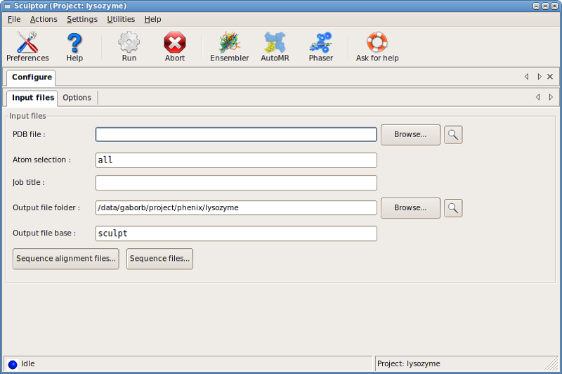
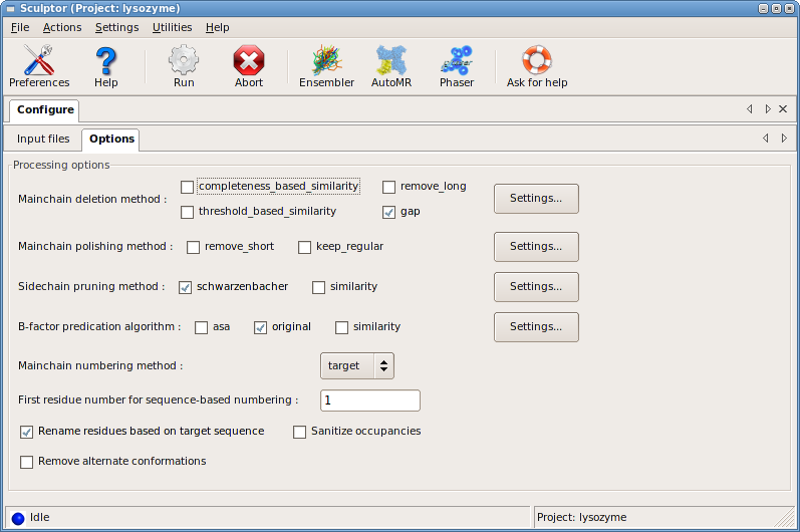

Model editing with Sculptor
- sculptor: Gabor Bunkoczi
- PHENIX GUI: Nathaniel Echols
Sculptor can be used to improve a molecular replacement model using
additional information available from an alignment and/or structure. It is
based on an algorithm outlined in Schwarzenbacher et al. (2004).
The following terms are used with the special meaning:
- target: the structure to be solved
- model: the structure used as a model for the target
Sculptor can be run from the PHENIX GUI and the command line, the only
difference being the way commands are taken from the user.
The graphical user interface makes all settings accessible either as
part of the main window (for frequently used options) or through a
series of dialog boxes under Settings for::
- Main-chain removal
- Main-chain polishing
- Sidechain pruning
- B-factors
- Renumbering
- Renaming
The input PDB file is specified in the PDB file: input line, while
alignments and target sequences can be added through the
Sequence alignment files... and the Sequence files... dialog boxes,
respectively.

In flexible mode, the fully processed structure is output. The file
is named according to the following convention: root_pdb.pdb, where
root is a user-defined parameter (accessible from the output
scope), and pdb is the basename of the input PDB file. In
predefined mode, there is an output file produced for each requested
protocol, and named according to root_pdb_N.pdb, where N is the
number of the corresponding protocol.
The workflow consists of several stages that can be independently
configured. These are listed in order of execution. For a summary of all
keywords with the corresponding defaults, see the Additional information
section.

- selection: selects a subset of the input PDB file, using
CNS-style atom selection syntax. Default: all.
- remove_alternate_conformations: selects the first alternate
conformation for disordered entities, and discards the rest. Also
involes sanitize_occupancies.
- sanitize_occupancies: resets all occupancies to 1.0.
In addition, chains will be analysed, and solvent atoms will be
separated from protein chains if they are not separated by TER
cards.
Discards residues from a model chain that are unlikely to improve signal
in molecular replacement. This information is calculated from the
alignment.
There are multiple algorithms available:
- gap: Deletes residues that are not present in the target (model
residue is aligned with a gap). For this algorithm, the supplied
alignment is used as a pairwise alignment.
- threshold_based_similarity: Deletes residues for which the
sequence similarity is below a certain threshold. All sequences in a
multiple alignment contribute to the score. Details of the sequence
similarity calculation are given in the section
Sequence similarity calculation.
- completeness_based_similarity: Deletes the same number of
residues (modified by a fractional offset) as the gap algorithm
would but residues that get removed are the ones with the lowest
sequence similarity. This way the default values are valid over a
much larger sequence similarity range than those in
threshold_based_similarity. All sequences in a multiple alignment
contribute to the score. Details of the sequence similarity
calculation are given in the section Sequence similarity calculation.
These algorithms can also be used together in any combination. In this
case, a residue will be deleted if assigned for deletion by any active
algorithms.
Makes small adjustments to the mainchain of a chain (taking results from
deletion into account) to make it obey basic macromolecular features.
- remove_short. Deletes additional residue segments from the
molecule so that no continuous segment is shorter than a preset limit
(determined by the minimum_length parameter of the
remove_short scope). Segment boundaries are determined from
spatial connectivity of residues. This algorithm is primarily
intended to remove "floating" residues that are the result of
extensive loop truncation.
- keep_regular. Reinstate deleted residues if they are in regular
secondary structure and the segment marked for deletion is shorter
than the maximum_length parameter of the keep_regular scope.
These algorithms can also be used together in combination. In this case,
the chain will be processed sequentially by both algorithms.
This phase determines the level distance from the Calpha atom
up to which a residue sidechain in the model is potentially similar to
its counterpart in the target.
- schwarzenbacher. Implements the algorithm published by
Schwarzenbacher et al. (2004), who propose that for optimal
molecular replacement results a residue sidechain should be truncated
if aligned with a non-identical residue, and not truncated otherwise.
The level of truncation is controlled by the pruning_level
parameter, and defaults to 3 (which corresponds to Cgamma)
and can be controlled by the pruning_level parameter of the
schwarzenbacher scope.
- Similarity. Uses sequence similarity values for deciding the
level of truncation. Residues above full_truncation_limit are not
truncated at all, those below the full_truncation_limit are
truncated to Cbeta, and those in between are truncated
according to the pruning_level parameter (all available from the
similarity scopei). Results tend to be similar to those given by
the Schwarzenbacher algorithm; however, it is possible to get high
similarity values (and full sidechain preservation) for certain
substitutions (i.e. TYR to PHE), and low-sequence similarity zones
can end up being truncated to Cbeta. Details of the sequence
similarity calculation are given in the section
Sequence similarity calculation.
These algorithms can also be used together in any combination, in which
case the sidechain will be truncated to the shortest value suggested.
B-factor prediction tries to increase B-factors for atoms that are
likely to be more flexible or more in error. The calculation takes
simple physical properties into account, and these are linearly
transformed to B-factors (controlled by the factor parameter of the
corresponding scope). If this value is lower than the minimum (from
the bfactorscope) parameter, a constant is added to all B-factors
so that the lowest of those equals to minimum (this is primarily
intended to avoid negative B-factors).
- original. This uses the original B-factor of atoms. This is
primarily intended as a contributor to a combination, but can also be
used to manipulate current B-factors, e.g. set them to a constant
value.
- asa. This calculates accessible surface area for an isolated
chain and transforms the raw values to B-factors. A high ASA-value
indicates a potential for flexibility. The calculation can be
configured by the precision and probe_radius parameters of
the asa scope.
- similarity. Low sequence similarity regions tend to be more
dissimilar. Details of the sequence similarity calculation are given
in the section Sequence similarity calculation.
Algorithms can be used in combination, in which case the sum of the
predicted B-factors is used. This mode can also be used to map sequence
similarity or accessible surface area to residues/atoms for display
purposes.
Renumbers residues according to the target or model sequence. It
is also possible to turn renumbering off (option original).
Renames residues according their counterpart in the target sequence. It
also "morphs" the sidechain, i.e. renames atoms and deletes atoms that
are not present. It can also generate missing atoms, if their positions
are determined unambigously by present atoms (available via the
completion parameter of the macromolecule scope).
- cbeta. Adds Cbeta atom if the residue is not glycine,
and C, N and Calpha atoms are all present.
Residues in these chains are normally deleted, unless an exception is
made by specifying the residue codes that are to be retained. This is
primarily intended to keep a known ligands of protein classes (e.g.
HEM).
Sequence similarity is calculated from the full alignment supplied
(taking all present sequences into account), using a scoring matrix
(currently blosum50, blosum62, dayhoff and identity are
available). Raw scores are then averaged over a window of residues
(defaults to 5 residues in both directions) that is weighted using
either uniform or triangular weights. The resulting scores are
"normalized" so that 1.0 would indicate a perfect alignment, 0.0 would
be a random match, and -1.0 a (locally) fully gapped alignment (on
average). Note, it is possible to obtain values outside this range. This
helps to ensure that defaults are sensible irrespective of the choice
for the scoring matrix.
Sequence similarity calculation is configured individually for the steps
that are using it.
phenix.sculptor \
[ command-line switches ] \
[ PHIL-format parameter files ] \
[ PHIL command-line assignments ] \
[ PDB-files ] \
[ alignment files ]
Command-line switches:
-h, --help show this help message and exit
--show-defaults print PHIL and exit
-i, --stdin read PHIL from stdin as well
-v, --verbosity set verbosity level (DEBUG,INFO,WARNING,VERBOSE)
--mode set mode (flexible,predefined)
PHIL arguments:
Everything not starting with a dash ('-') is interpreted as a PHIL
argument. This can be a PHIL-format file containing parameters,
command-line assignment or a file whose type is automatically recognized
(based on file extension). Note that sequence files are not accepted on
the command line, since associated chains could not easily be guessed
and require a fully specified parameter scope.
- Very short residue segments (shorter than 3 consecutive residues)
cannot be reliably aligned to the sequence, and these will be
discarded from the model.
- The similarity algorithm from the deletion scope may result
in residues that are aligned with a gap being included in the model.
Although this possibly indicates an error in the alignment and is
potentially beneficial for molecular replacement, this causes a
problem at the rename stage, as there is no 3-letter residue name
for a "-"; these residues are tentatively named GAP.
- Residue numbers for GAP residues are built up using the residue
number of the previous non-GAP residue and an insertion code (A-Z,
depending on the number of GAP residues after the previous non-GAP
residue).
- No pdb files specified: there are no PDB files to process.
- No atoms left after atom selection: the atom selection provided
results in an empty structure.
- No alignment: no alignments have been provided and the
calculation requires alignment information.
- No sufficiently similar alignment sequences have been found: the
longest exact overlap between the chain sequence and any alignment
sequences is lower than the min_hssp_length parameter (typically
6 residues), therefore no alignment corresponds to this chain.
- Unable to align: matching fraction < min_matching_fraction: the
best matching alignment does not match the chain sufficiently
(specified by the min_matching_fraction parameter, typically
40%), and it is likely that the alignment is incorrect.
- There are N sequences with longest overlap: N sequences give
identical matching statistics with the current chain. Lacking other
criteria, the first is selected. Ordering is affected by the sequence
of alignment files passed to the program and the order of sequences
in the alignment file.
- Unaligned residues: certain residues could not be aligned
reliably with the sequence because they appear in very short segments
and sequence matching can be arbitrary. The minimum length of an
accepted segments is controlled by the min_hssp_length parameter.
- Sequence mismatches: there are mismatches between the alignment
and the chain sequence. These are typically caused by unknown
residues codes assigned to uncommon or modified residues. If the
sequence identity falls below a preset threshold (controlled by the
min_matching_fraction parameter), and error is raised.
- File contains multiple sequences, only the first will be used:
the sequence file used to provide the target sequence for given
chains contains multiple sequences. The first sequence will be
accepted as correct.
| [Schwarzenbacher2004] | The importance of alignment accuracy for molecular replacement.
R. Schwarzenbacher, A. Godzik, S. K. Grzechnik and L. Jaroszewski
Acta Cryst. D60, 1229-1236 (2004) |
Improvement of molecular-replacement models with Sculptor. G.
Bunkoczi and R. J. Read Acta Cryst. D67, 303-312 (2011)
- hetero = None Keep named hetero residues
- min_hssp_length = 6 Length of residue segment that indicates a reliable match
- min_matching_fraction = 0.4 Minimum matching fraction in residue-to-alignment matching
- inputInput files
- alignment_from_homology_search = None Input homology search to use hits as alignments
- modelInput pdb file
- file_name = None PDB file name
- selection = all Selection string
- remove_alternate_conformations = False Remove alternate conformations
- sanitize_occupancies = False Sets occupancies > 1.0 to 1.0
- keep_crystal_symmetry = False Keeps the crystal symmetry of the model
- alignmentInput alignment file
- file_name = None
- target_index = 1 Index of target sequence in alignment
- sequenceInput sequence file
- file_name = None Sequence file
- chain_ids = None
- outputOutput options
- job_title = None Job title in PHENIX GUI, not used on command line
- folder = . Output file folder
- root = sculpt Output file root
- format = *pdb coot Output file format
- macromoleculeWorkflow step configuration
- completion = *cbeta Sidechain completion algorithms (* = active)
- rename = True True: enable; False: disable
- keep_ptm_if_base_residues_agree = False Keep post-translational modification if residues agree
- deletionConfigure mainchain deletion
- use = *gap threshold_based_similarity completeness_based_similarity remove_long Available algorithms (* = active)
- gapDelete residue if aligned with gap
- threshold_based_similarityDelete residue if sequence similarity is low
- threshold = -0.2 Threshold to accept a residue
- calculationConfigure sequence similarity calculation
- matrix = *identity dayhoff blosum50 blosum62 Similarity matrix
- window = 5 Averaging window width
- weighting = uniform *triangular Weighting scheme
- completeness_based_similarityDelete residues based on sequence similarity to get same number of gaps as the Schwarzenbacher algorithm
- offset = 0.0 Completeness in fraction of model length (0.0 = completeness from Schwarzenbacher algorithm, useful range: +/-0.05)
- calculationConfigure sequence similarity calculation
- matrix = *identity dayhoff blosum50 blosum62 Similarity matrix
- window = 5 Averaging window width
- weighting = uniform *triangular Weighting scheme
- remove_longDelete residue if aligned with gap
- min_length = 3 Minimum length for mainchain segment to remove
- polishingConfigure mainchain polishing
- use = remove_short keep_regular Available algorithms (* = active)
- remove_shortDelete short unconnected segments
- minimum_length = 3 Minimum length
- keep_regularKeep residues in secondary structure
- maximum_length = 1 Maximum length
- pruningConfigure sidechain pruning
- use = *schwarzenbacher similarity Available algorithms (* = active)
- schwarzenbacherTruncate atoms if target residue != source residue
- pruning_level = 2 Level of truncation
- similarityTruncate atoms based on sequence similarity
- pruning_level = 2 Level of intermediate truncation
- full_length_limit = 0.2 Limit of no truncation
- full_truncation_limit = -0.2 Limit for full truncation
- calculationConfigure sequence similarity calculation
- matrix = *identity dayhoff blosum50 blosum62 Similarity matrix
- window = 5 Averaging window width
- weighting = uniform *triangular Weighting scheme
- bfactorConfigure bfactor prediction
- use = *original similarity asa Available algorithms (* = active)
- minimum = 10 Minimum allowed value (a constant is added if any B-factors would fall below this value)
- originalUse original bfactors to predict new B-values
- factor = 1 Transform values by multiplying with a factor
- similarityUse sequence similarity to predict new B-values
- factor = -100 Transform values by multiplying with a factor
- calculationConfigure sequence similarity calculation
- matrix = *identity dayhoff blosum50 blosum62 Similarity matrix
- window = 5 Averaging window width
- weighting = uniform *triangular Weighting scheme
- asaUse accessible surface area to predict new B-values
- factor = 2 Transform values by multiplying with a factor
- precision = 960 Number of points per atom
- probe_radius = 1.4 Radius for probing surface accessibility
- renumber
- use = *target model original Mainchain numbering; (* = selected; None: disable)
- start = 1 Number for first residue